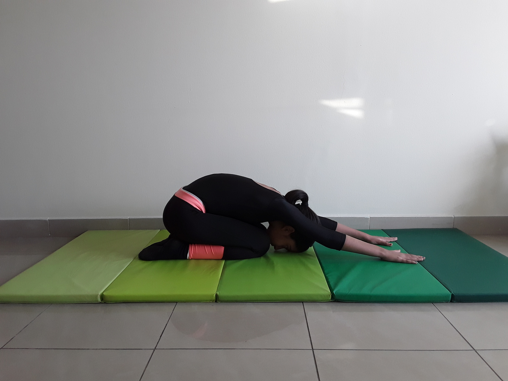

CHILD POSE

Steps to perform Child Pose
- Come to your hands and knees on the mat.
- Spread your knees as wide as your mat, keeping the tops of your feet on the floor with the big toes touching.
- Bring your belly to rest between your thighs and root your forehead to the floor. Relax the shoulders, jaw, and eyes. If it is not comfortable to place the forehead on the floor, rest it on a block or two stacked fists.
- There are several possible arm variations. You can stretch your arms in front of you with the palms toward the floor or bring your arms back alongside your thighs with the palms facing upwards. These are the most common variations. But you can also stretch the arms forward with palms facing up for a shoulder release or try bending the elbows so that the palms touch and rest the thumbs at the back of the neck. In this position inch the elbows forward.
- Do whichever feel more comfortable for you. If you've been doing a lot of shoulder work, the second option feels nice.
- Stay as long as you like, eventually reconnecting with the steady inhales and exhales of your breath.